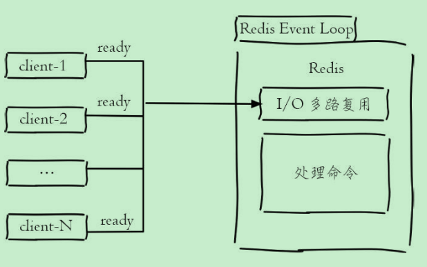

Redis学习-3-分布式锁
单线程架构
Redis使用了单线程架构和I/O多路复用来实现高性能内存数据库服务。
为什么单线程还能这么快
纯内存访问，Redis将所有数据放在内存中，内存的响应时长为100纳秒，这是Redis达到每秒万级别访问的重要基础。
非阻塞I/O，Redis使用epoll作为I/O多路复用技术的实现，再加上Redis自身的时间处理模型将epoll中的连接、读写、关闭都转换为事件，不在网络I/O上浪费过多的时间。IO多路复用和自身事件模型如下图所示：

单线程避免了线程切换和竞态产生的消耗。
单线程好处：
单线程可以简化数据结构和算法的实现。相对而言并发数据结构的实现不但困难而且开发测试比较麻烦。
避免了线程的切换和竞态产生的消耗，对于服务端开发来说，锁和线程切换通常是性能杀手。
单线程的问题：
对于每个命令的执行时间有要求。如果某个命令执行过长，会造成其他命令的阻塞，对于Redis这种高性能的服务来说是致命的，所以Redis是面向快速执行场景的数据库。
分布式锁
分布式锁本质上要实现的目标就是在Redis里面占一个坑，当别的进程要来占时，发现坑已经被人占了，就只好放弃或稍后再试。
一般的形式是setnx …. expire组合
超时问题
Redis的分布式锁不能解决超时问题，如果在加锁和释放锁之间的执行逻辑太长，以至于超出了锁的超时时间限制，就会出现问题。
为了避免这个问题，Redis分布式锁不要用于较长时间的任务，如果真的偶尔出现，数据出现小波动错乱可能需要人工介入解决。
-------------本文结束感谢您的阅读-------------